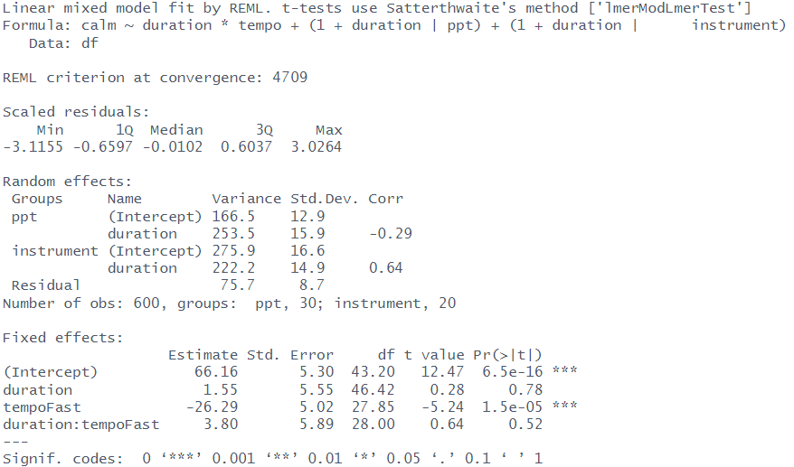

| content | questions |
|---|---|
| Weeks 1-5 (multilevel models) | 4 questions totaling 32 marks |
| Weeks 7-11 (PCA/EFA/CFA/Psychometrics) | 4 questions totalling 38 marks |
Exam Prep
Data Analysis for Psychology in R 3
Dr Josiah King
Psychology, PPLS
University of Edinburgh
Course Overview
|
multilevel modelling working with group structured data |
regression refresher |
| the multilevel model | |
| more complex groupings | |
| centering, assumptions, and diagnostics | |
| recap | |
|
factor analysis working with multi-item measures |
measurement and dimensionality |
| exploring underlying constructs (EFA) | |
| testing theoretical models (CFA) | |
| reliability and validity | |
| recap & exam prep |
Outline
Process
Structure of exam
Things to take into exam
Exam “strategy”
Example Questions
Process
Details
WHEN?
Date: Saturday 13th December 2025 Time: 09:30am to 11:30am
WHERE?
For most of you:
Lomond Suite, Edinburgh International Conference Centre, Morrison Street.
CHECK YOUR CALENDAR https://www.ed.ac.uk/timetabling-examinations/exams/exam-diets
Details
Arrive in plenty of time
There will be directions to room
When you go into the room, you will need your student ID on your desk
Invigilators will give you exam instructions
Things to take to exam
Student Card!!
Pens (multiple) blue or black ink
Pencil (for rough work)
Ruler
- If you like, not really needed, but might be useful.
Calculator
- Any type (see list on Learn of permitted calculators)
- No advantage to scientific vs normal
- Phone/Watch can not be your calculator
- Any type (see list on Learn of permitted calculators)
Things you will be given
What you are given
a specific sheet for your MCQ
an answer book for all other questions
some rough paper ( if you want to use it )
the equation sheet
FILLING IN FRONT COVERS
MCQ sheet:
- matriculation number (UUN but without the “s”)
Answer book:
Things you can take away
NOTHING!
(Other than the things you bring in with you like pens, pencils, calculator)
When you finish, do not take any questions, answers, rough work, equation sheet home. These should all be collected by the invigilators.
Exam Structure
Exam Structure
Section A - 30 MARKS
15 MCQ
Just like quiz questions on Learn
On all topics
Section B - 70 MARKS
8 Questions
Marks range from 4 to 15 marks per question
Strategy
Section A - 30 MARKS
15 MCQ
Just like quiz questions on Learn
On all topics
15-18 minutes
- You can answer these quickly at the end
- Do the ones you know, move on
- Keep track of how many you have not done, so you can go back to them at the end
Strategy
Questions on:
- Calculation
- Explanation
- Specification
- Interpretation
Section B - 70 MARKS
8 Questions
Marks range from 4 to 15 marks per question
Strategy
Questions on:
- Calculation
- Explanation
- Specification
- Interpretation
approx 5 marks
show your working (could get marks for this if answer is wrong)
think, e.g.:
- calculating icc from an intercept only model
- calculating coef from fixef and ranef
- calculating variance explained from eigenvalues
- calculating SS loadings
Strategy
Questions on:
- Calculation
- Explanation
- Specification
- Interpretation
approx 6-8 marks
often these ask to define a couple of things.
1 to 2 sentences each thing.
think, e.g.:
- “ICC”
- “random effects and fixed effects”
- “no pooling/complete pooling/partial pooling”
- “factor loading”
- “reliability”
Strategy
Questions on:
- Calculation
- Explanation
- Specification
- Interpretation
approx 10 marks
you have done this in the report, and lots of times in labs.
You know more than you think you do, e.g.:
- start with an outcome variable.
- ask yourself: “what in my question is asking about ‘effects on Y’/‘influences on Y’/‘predicts Y’”.
Tip: some methods we’ve covered lend themselves more to these sort of questions.
Strategy
Questions on:
- Calculation
- Explanation
- Specification
- Interpretation
approx 10-15 marks
you have done this in the report, and also seen it plenty of times in various forms in labs and lectures
- the questions will list the things to comment on
- don’t just parrot back numbers. provide interpretation
- you do NOT need to write out formally with stuff like “\(b=.54, t(46)=2.1, p<.05\)”. This just wastes your time. Focus on interpreting the estimate, and mention if it’s significant.
- these usually provide information about the research aims, so place your answer in that context.
Strategy
Questions on:
- Calculation
- Explanation
- Specification
- Interpretation
approx 10-15 marks
Suggestion: Take the main functions we have seen throughout DAPR3: lmer(), principal(), fa(), cfa(). Print an output from the lab/lectures and annotate it. what does each bit of the output represent?
Tip: some methods we’ve covered lend themselves more to these sort of questions.
“Do I need to memorise code?”
Short answer: Nope.
But… you should make sure you know how to use the main functions we’ve seen, and how to interpret their summary outputs:
lmer()principal()fa()cfa()
breakdowns
In almost all cases, an [X mark] question has been broken into sub-questions to help you focus on what to write.
This might feel like more reading.
We have managed to make sure that 1 question per page.

breakdowns (the other sort)
- we all fail at some things1
- an exam is a test, and testing is not the same thing as measurement!
- not the end of the world
- in 2 years time, will it matter to you? (or to anyone?) (when did you stop caring about your school grades?)
breakdowns (the other sort)
- stop. breathe. reset.
- in for 4, hold for 4, out for 4, hold for 4 ….
Mock Questions




good luck!
for the next couple of weeks
Office hours
Josiah
| when | where |
|---|---|
| Tues 25th, 2-3 | Online |
| Thurs 27th, 11-12 | G15, 7GS |
| Tues 2nd, 2-3 | Online |
| Thurs 4th, 11-12 | Online |
| Tues 9th, 2-3 | Online |
| Thurs 11th, 11-12 | G15, 7GS |
Elizabeth
Tuesday/Wednesday afternoons - choose a time on Elizabeth’s bookings page.
Piazza!
- Any time! We’ll aim to always answer within a couple of (working) days.